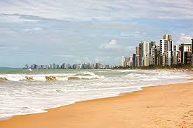

Pernambuco é famoso por sua cultura vibrante, com destaque para o Frevo, o Maracatu e o Cavalo Marinho. Sua capital, Recife, é um importante centro cultural e econômico do Nordeste, conhecida pelas pontes e pelo Pelourinho. O estado também é conhecido pela bela cidade histórica de Olinda e pelas praias de Porto de Galinhas. A economia é diversificada, com destaque para o turismo, indústria e agricultura.
